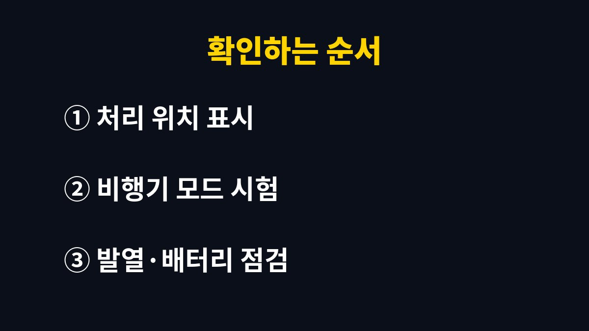

온디바이스 AI는 인터넷 너머의 서버가 아니라 내 스마트폰이나 노트북 안의 칩이 직접 AI 계산을 처리하는 방식이다.
요즘 새 기기마다 AI 기능이 붙는데, 그 기능이 어디에서 계산되는지에 따라 속도와 개인정보, 배터리 소모가 달라진다.
이 글은 두 방식이 어디서 갈리는지, 기기를 고를 때 무엇을 보면 되는지를 풀어 쓴다.
챗봇에 질문을 입력하면 대개 문장이 인터넷을 타고 회사의 대형 서버로 가서 답이 계산된 뒤 돌아온다.
온디바이스 방식은 이 왕복을 건너뛴다.
기기 안에 들어 있는 비교적 작은 AI 모델이 NPU 같은 전용 연산 장치나 일반 프로세서로 직접 답을 만든다.
통화 내용 실시간 번역, 사진 속 물체 지우기, 음성 받아쓰기, 사진 분류 같은 기능이 대표적이다.
제조사마다 기능 이름은 다르지만, 일부는 기기 안에서만 처리하고 일부는 서버의 도움을 받는 혼합 구조로 알려져 있다.
같은 기능 이름 아래에서도 처리 위치가 항목마다 다를 수 있다는 뜻이다.
AI 계산은 일반적인 앱 실행보다 같은 숫자 연산을 한꺼번에 많이 돌려야 한다.
그래서 최근 스마트폰과 노트북에는 NPU라는 AI용 연산 장치가 따로 들어간다.
이 장치가 없는 예전 기기는 같은 기능이 느리거나, 아예 서버로만 처리되는 경우가 있다.
현실의 AI 기능은 둘 중 하나로 딱 나뉘기보다 섞여 있는 경우가 많다.
가벼운 요청은 기기 안에서 처리하고, 무거운 요청만 제조사가 운영하는 서버로 넘기는 식이다.
어느 쪽으로 넘어갔는지 사용자 화면에 표시해 주는 기기도 있고, 표시하지 않는 기기도 있다.
그래서 같은 기능을 쓰는데도 어제는 빨랐고 오늘은 느리다면 처리 경로가 바뀌었을 가능성을 의심해 볼 만하다.
모델이 기기에 내려받아져 있는 기능은 비행기 모드에서도 돈다.
다만 최신 정보 검색이나 큰 모델이 필요한 요청은 여전히 서버를 부른다.
기능마다 따로 확인해야 한다.
기기 안에서만 처리하면 서버에 전송되는 데이터가 줄어드는 것은 사실이다.
그렇다고 모든 기능이 그렇다는 보증은 아니다.
서버로 넘어가는 항목이 있는지는 제조사의 개인정보 안내와 기능별 설명에서 읽어야 한다.
기기에 넣으려면 모델을 작게 줄여야 한다.
긴 문서를 깊게 분석하거나 복잡한 추론이 필요한 일은 서버의 큰 모델 쪽이 아직 유리하다.
반대로 번역이나 받아쓰기처럼 짧고 반복되는 일은 작은 모델로도 충분히 빠르다.
| 비교 항목 | 온디바이스 AI | 서버 AI |
|---|---|---|
| 처리 위치 | 기기 안의 칩 | 회사의 서버 |
| 인터넷 연결 | 없어도 되는 기능이 많다 | 대부분 필요하다 |
| 응답 속도 | 왕복이 없어 빠른 편이다 | 통신 상태에 영향을 받는다 |
| 모델 크기 | 작게 줄인 모델 | 큰 모델 사용 가능 |
| 기기 부담 | 발열과 배터리 소모가 늘 수 있다 | 기기 부담이 적다 |
표의 성격은 경향이지 규칙이 아니다.
같은 기능도 기기 사양과 소프트웨어 버전에 따라 처리 위치가 바뀌기도 한다.
예를 들어 지하철처럼 통신이 불안정한 곳에서 통화 번역이나 받아쓰기를 쓴다고 가정한다.
서버 방식이면 연결이 끊기는 순간 기능이 멈추지만, 기기 안에서 도는 방식이면 그대로 이어진다.
이 차이가 가장 체감되는 장면이다.
가격 차이도 따져 볼 부분이다.
기기 안에서 AI를 돌리려면 더 강한 칩과 더 많은 메모리가 필요하고, 그 비용은 기기 가격에 반영될 수 있다.
반대로 서버 AI는 기기가 낮은 사양이어도 쓸 수 있지만, 서비스 이용료나 사용 횟수 제한이 따라붙는 경우가 있다.
확인은 어렵지 않다.
설명서나 기능 안내문에 처리 위치가 적혀 있는 경우가 있고, 없으면 직접 시험해 볼 수 있다.
아래 순서는 어떤 기기에서도 쓸 수 있도록 일반적인 기준으로만 적었다.

온디바이스 AI는 빠르고 연결에 덜 의존한다는 장점이 있고, 모델 크기와 배터리라는 한계도 함께 가진다.
새 기기를 살펴볼 때는 AI 기능 목록보다 그 기능이 어디에서 처리되는지를 먼저 확인하는 쪽이 낫다.
비행기 모드로 한 번 눌러 보는 것이 가장 빠른 확인 방법이다.
서버로 넘어가는 기능을 쓸 때는 입력하는 내용에 주민등록번호나 계좌번호 같은 민감한 정보가 들어가지 않는지 한 번 더 본다.
※ 2026년 기준 공식 안내를 바탕으로 정리한 글이며, 기기·앱 버전에 따라 메뉴 이름이 다를 수 있다.